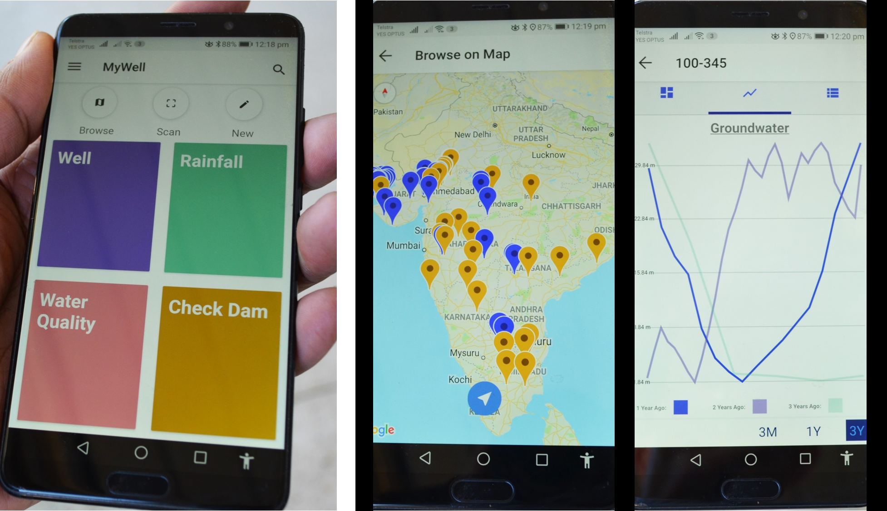

The MARVI project is focused on developing a village level participatory approach, models and tools to assist in improving groundwater supplies and reducing its demand through the direct involvement of farmers and other stakeholders. A unique feature of MARVI is the use of scientific measurements by citizens through the engagement of Bhujal Jankaars (BJs), a Hindi word meaning ‘groundwater informed’ volunteers. With appropriate training and capacity building, BJs monitor groundwater levels and quality, making sense from a village perspective of what is happening to village groundwater availability. BJs convey this information to farmers and others in their own language.
.JPG)

Groundwater level represents the integration of recharge, pumping and flow processes and is a direct measure of groundwater availability and the success of any collective management practices. BJs are an effective, trusted and valuable interface between village communities and government agencies, NGOs and researchers.


This visualization is a map including the location of each well monitoried currently, and other facts about each well including well depth and elevation.
This is the groundwater explorer. Here you can filter through many different filters to explore how to groundwater changes in these regions throughout the year.
This visualization is meant to display the process involved in creating an optimized well network. By reducing the number of wells to around 25, we hope to lessen the burden on the Bhujal Jaankaar (BJ) while maintaining accuracy in water and well behavior.
This visualization is meant to show the final results of the optimization process and the 25 wells to monitor moving forward.